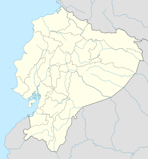
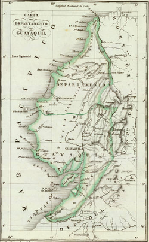

Historia
En la era precolombina, la región de Guayaquil estaba habitada por varios asentamientos entre las cuales se encontraban diversas culturas, religiones y cacicazgos. Estos pueblos constaban de organización política, acciones guerreras, e intercambio comercial con otros pueblos localizados hacia el sur en el actual Perú, y hacia el norte en el actual México, por la navegación en balsas, apoyándose en la estructura fluvial del río Guayas. Los pueblos que se establecieron en las cercanías al río fueron producto de la migración que se produjo a partir de la cultura Manteña, siendo estos conocidos como "Manteños del Sur" o como cultura Huancavilca En el último período de la era prehispánica, el período de Integración, los huancavilcas abarcaron la mayor parte de la actual provincia del Guayas y otras provincias aledañas, en la cual también se desarrollaron otras culturas. Estas culturas se desarrollaron independientes de otras hasta la conquista española.
Poco tiempo después de que Francisco Pizarro comenzó la conquista del Perú, y con el fin de colonizar y expandir el dominio español hacia el norte del antiguo Imperio Inca, ordenó la fundación de la Villa de Santiago de Quito en 1534, cerca de la actual ciudad de Riobamba, pero al cabo de poco tiempo se ordenó su traslado a un lugar dentro del territorio inca, es debido a esto que parten dos expediciones. Una de las expeciones tomó rumbo norte, la cual fundaría en lo posterior la ciudad de San Francisco de Quito. Mientras tanto, la otra expedición tomó rumbo hacia el suroeste y llegaría a la región litoral, con lo cual se establecen en varios sectores pero son expulsados de ellos por la resistencia nativa.

Época colonial e independencia
En 1763 el Corregimiento de Guayaquil se transformó en el Gobierno de Guayaquil, y pasó de formar parte del Virreinato del Perú al Virreinato de Nueva Granada.
Después de que en otras partes de la Real Audiencia de Quito se realizaran intentos fallidos de emancipación, el 9 de octubre de 1820 la ciudad de Guayaquil declaró su independencia del Imperio español.,y con esto Durán pasó a formar parte de la Provincia Libre de Guayaquil. Además, para asegurar la soberanía e independencia de Guayaquil y sus alrededores se creó la División Protectora de Quito, mediante la cual se pretendía independizar al resto de la Presidencia de Quito, dando paso así al comienzo de la guerra de independencia de la región.
Extensión territorial de la Provincia Libre de Guayaquil integrada posteriormente a la Gran Colombia.
El ejército guayaquileño mantuvo una serie de batallas para asegurar la independencia de la ciudad y de su provincia, sin embargo, los ejércitos realistas se seguían reunificando en la serranía. El presidente Olmedo decidió pedir ayuda a los demás libertadores de América del Sur, con lo cual obtuvo la asistencia de Simón Bolívar, quien envió a Antonio José de Sucre con un ejército considerable a favor de la causa emancipadora.A partir de aquello los ejércitos libertadores se consolidaron en el litoral, ingresaron al callejón interandino donde tomaron rumbo norte, manteniendo varias batallas y finalmente el 24 de mayo de 1822 derrotaron a las fuerzas realistas en la Batalla de Pichincha que consolidó la independencia de los territorios de la antigua Real Audiencia de Quito.
Luego de haberse alcanzado la independencia, Quito y Cuenca se anexaron rápidamente a la Gran Colombia, mientras que Bolívar intentaba también la anexión de la Provincia Libre de Guayaquil. Sin embargo, el pueblo consideraba también los opciones de adherirse al Perú o permanecer independientes. José de San Martín también mostró su deseo de que esta ciudad se una al Perú, motivo por el cual Bolívar decide ingresar a la ciudad con un ejército y esperar a San Martín, a raíz de esto Olmedo se autoexilia. El encuentro de los libertadores, denominado como la Entrevista de Guayaquil se dio el 26 de julio de 1822, y tuvo como resultado los acuerdos de la definición de la independencia peruana y la anexión de Guayaquil a la Gran Colombia.El 31 de julio de 1822, el estado guayaquileño se convirtió en el Departamento de Guayaquil, que a su vez formó parte del Distrito del Sur de la Gran Colombia.

Época republicana
Hasta ese momento, Durán no existía como tal, pero a fines del siglo XIX en las faldas del cerro Las Cabras, comienzan a asentarse cientos de familias. Desde entonces Durán ha crecido rápidamente; a consecuencia de esto, el 16 de octubre de 1902 Durán fue nombrada parroquia rural del Cantón Guayaquil. En 1899 comenzó la construcción del Ferrocarril Transandino por el Gral. Eloy Alfaro, el objetivo del ferrocarril fue unir las dos ciudades más grandes del país: Guayaquil y Quito, pero, para ahorrar dinero y no construir un puente en el río Guayas, el ferrocarril fue construido desde Durán. Desde entonces, gracias al ferrocarril y por su cercanía con Guayaquil, Durán ha crecido aceleradamente y ha alcanzado un notable desarrollo agrícola, industrial y comercial. En 1920, el Consejo Provincial del Guayas cambia el nombre de la parroquia a Eloy Alfaro.
Durante la presidencia del Ing. León Febres-Cordero Rivadeneira, el viernes 10 de enero de 1986 Durán fue elevado a la categoría de Cantón de la Provincia de Guayas. Gracias a su rápido crecimiento Durán se ha convertido en la sexta ciudad más poblada del país y una de la más importantes.
.png)